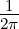

Getting started
Veloci Raptor
03/14/15
Welcome to LaTeX Base, a web-based LaTeX editor with live document
preview! Here are some things to try –
- edit the document name above by typing in the input field
- make changes to the body on the left and watch the preview update
- include an image by url like this one
- check the compiler output by clicking the log button
- format a mathematical expression like  ∫
−∞∞e−
dx
- download the document as a pdf by selecting Export > Local
Filesystem (or by clicking the desktop download button)
- export your work to Dropbox or Google Drive
- import an existing document from your local computer
- try using the vim or emacs keyboard shortcuts
Editing short documents online is free. View premium plans and pricing at
https://latexbase.com/static/pricing to enjoy unlimited document editing
(online or offline) and a variety of other useful features. Thanks for trying out our
service and don’t hesitate to get in touch at support@latexbase.com!